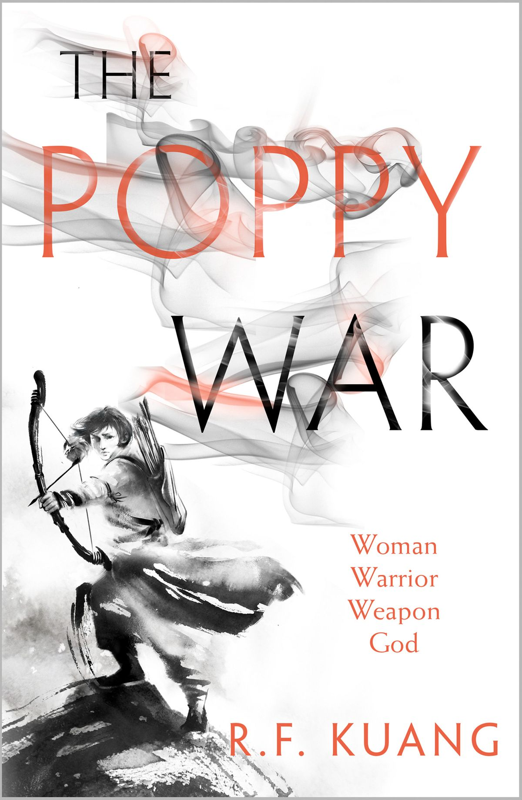

The Poppy War
Autor: R.F. Kuang
Ano de edição: 11-2024
Editor: HarperCollins Publishers
Idioma: Inglês
Dimensões: 157 x 241 x 48 mm
Encadernação: Capa dura
Páginas: 576
Descrição: Órfã de guerra, Rin conquistou seu lugar na escola militar mais prestigiada de Nikan. Lá, ela descobre seu poder letal e sobrenatural de xamanismo — e aprende que deuses há muito considerados mortos continuam muito vivos. Quando surge um conflito inevitável entre os antigos inimigos, o Império Nikara e a Federação de Mugen, Rin percebe que seus poderes xamânicos podem ser a...